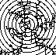

Pictured below are the Koch curve and three of its relatives. From top left to bottom right, these pictures become increasingly "fuzzy." Can we find a way to quantify the difference in these pictures? Perhaps such a method could be used to distinguish the coastline of Norway from that of Italy, for example, or the beating of a healthy heart from that of a diseased heart, or the closing prices of a conservative stock from those of a more risky stock, or a text of Shakespeare from one of Bacon. Let us see.
Contents of this page:
| A.Ineffective ways to measure problems with trying to measure a shape in the wrong dimension, prelude to noninteger dimensions. | |
| BBox-counting dimension extends the notion of dimension to fractals. Arguing by analogy with Euclidean dimension, we develop an algorithm for determining this dimension. | |
| C. Similarity dimension is a simplified method of computing dimensions for self-similar fractals with all pieces scaled by the same factor. This dimension gives a clear indication of the relation between dimension and complexity. | |
| D. The Moran formula extends the similarity dimension fromula to self-similar fractals with different scaling factors. | |
| E. Other dimensions. Among several variants, we study the mass dimension, a measure of how the mass of an object scales with the size of the object. Objects with hierarchical structures, dust clumps and natural sponges, for example, typically have non-integer mass dimensions. |  |
| F. Area-Perimeter Relations. Fractal curves that enclose regions in the plane can reveal their dimensions by a subtle relation between area and perimeter. | |
| G. Some Alegbra of Dimensions. When we build fractals from other fractals, how is the dimension of the whole related to the dimensions of the pieces? | |
| H. Natural Fractals Nature is filled with fractals. We survey a few examples, and of the physical and biological processes forming them. | |
| I. Manufactured fractals. Here we study fractals in industry, and note examples of how dimension directs some specific manufacturing processes. | |
| Here are some calculations of dimensions of variations on the Cantor set. |